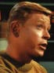
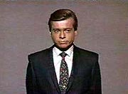
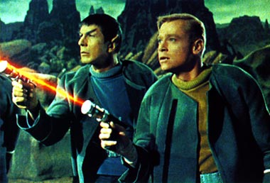
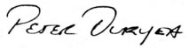
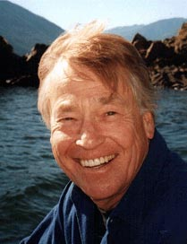
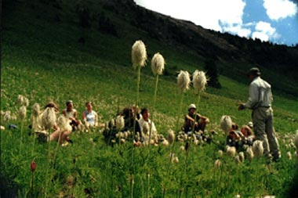

|
por Rosimeire Anne
 Gene Roddenberry o escolheu para interpretar Jos Tyler, o mais jovem oficial da ponte a bordo da nave Enterprise, no primeiro piloto da
Srie Clssica "The
Cage". Com o rapa promovido pela NBC em preparao para um novo piloto, o papel acabou sendo cortado. Mas sua rpida participao no programa j garante um espao para o ator no corao dos fs -- e na histria da indstria do entretenimento. provavelmente tudo o que vai ser preservado de sua carreira no sculo 21, graas remasterizao da srie para o lanamento em DVD.
Peter Duryea nasceu dia 14 de julho de 1939 em Los Angeles, Califrnia (EUA). Ele filho do ator Dan Duryea, que ficou famoso no cinema por suas interpretaes como vilo em filmes policiais e western. Apesar de ter nascido no seio da indstria do entretenimento, o jovem Duryea trabalhou em poucos filmes e sries de televiso.
 Com sua boa aparncia americana, Peter era bem natural ao interpretar homens de olhar sedutor. Mas ele tinha tambm uma considervel habilidade na arte de representar, adicionando um belo bnus sua aparncia de garoto bonito -- ele interpretou o diabo da maneira mais visceral e engenhosa.
Se Roddenberry s conseguiu dar a Peter um papel num nico episdio, o produtor de "Dragnet", Jack Webb, fez muito mais, escalando Duryea para fazer viles em uma seqncia de episdios de "Dragnet", mais notavelmente no episdio intitulado "Intelligence - DR-34", em 1969, no qual Duryea interpreta um ambicioso membro de um armado e perigoso grupo paramilitar de direita.
Ele tambm interpretou jovens de bom corao e estudantes em sries como "Family Affair".


Em filmes de longa-metragem, o trabalho de Duryea ficou limitado a grandes papis em produes de pequeno oramento, como "Catalina Caper", e a personagens de pouca importncia, em filmes como "The Carpetbaggers". Em contraste com seu pai, que fez muitos filmes e sries durante dcadas, o jovem Peter parou com seu trabalho nas telas no comeo dos anos 1970.
 No fim dos anos 70, o agora "vov" Peter, que deixou uma carreira lucrativa em Los Angeles, achou seu lugar longe de Hollywood: a natureza. isso mesmo, Jos Tyler virou um abraador de rvores daqueles.
Duryea membro fundador da Guiding Hands Recreational Society, entidade sem fins lucrativos que financia um parque natural voltado para acampamento, o Tipi Camp. A instalao, localizada s margens do lago Kootenay, sudeste da Columbia Britnica (Canad), oferece workshops e retiros desde 1988. Duryea diz que "a natureza basicamente pacfica e opera como uma grande cooperativa".
Essa uma das razes pelas quais os jogos realizados no Tipi Camp so todos no-competitivos. Para quem briga no acampamento, a punio "severa": os encrenqueiros so levados ao Poste da Paz, plantado e esculpido em 1988, onde so obrigados a ficar frente a frente para que "olhem um nos olhos do outro e resolvam a diferena".
"Ns usamos apenas quatro de nossos sentidos", diz Peter Duryea, "Ns temos por volta de 53 sentidos que nos conectam natureza, como cordes umbilicais, mas a maioria deles atrofiaram porque passamos 99% de nosso tempo entre quatro paredes." Sua referncia aos 53 sentidos vem da pesquisa de Michael Cohen, professor de ecopsicologia aplicada (!) da Universidade Greenwich, no Estado de Washington (EUA). A filosofia do acampamento baseada em "observaes sobre como a natureza trabalha e como nossa mente opera, e a distncia entre as duas". A meta justamente reduzir essa distncia.

De junho at setembro, centenas de pessoas de todas as idades vo para o Tipi Camp, levando embora consigo nada mais do que experincia e deixando uma insignificante pegada. O programa se prope a "desafiar todas as pessoas", diz Duryea, "juntamente com exerccios espirituais para se sintonizar com a natureza, as crianas tambm aprendem orientao bsica,
primeiros-socorros, trabalhos manuais, cuidados na gua, entre outras habilidades."
A experincia, segundo Duryea, mudou o curso de sua vida e o levou de volta produo de filmes. Sua companhia de mdia educacional, Radiance Video, realizou mais de 40 produes relacionadas ao meio ambiente desde 1983, falando de tpicos delicados como a restaurao das bacias hidrogrficas e reciclagem.
"Causas que precisam ter uma luz lanada sobre elas ganham o interesse da Radiance Video", diz Duryea.
Filmografia
1970 - Blood of the Iron Maiden - Peter
1967 - Catalina Caper - Tad
1966 - Lt. Robin Crusoe, U.S.N. - Co-Piloto
1965 - The Bounty Killer - Juventude
1965 - Taggart - Rusty Bob Blazer
1964 - The Carpetbaggers - Diretor Assistente
Sries de TV e telefilmes
1971 - Family Affair no episdio "Cinder-Emily" - Jim Turner
1971 - Family Affair no episdio "Too Late, Too Soon" - Jim Turner
1969 - Dragnet no episdio "Intelligence - DR-34" - Paul Reed
1969 - Adam-12 no episdio "Log 62: Grand Theft Horse?" - Charles Carter
1968 - Gomer Pyle, U.S.M.C. no episdio "Gomer, the Perfect M.P." - Ben Derzansky
1968 - Dragnet no episdio "Internal Affairs - DR-20" - John Meadows
1968 - I Spy no episdio "Tag, You're It"
1967 - Dragnet no episdio "The Trial Board" - Ted Clover
1966 - Combat! no episdio "Jonah" - Simmons
1966 - Jornada nas Estrelas, em "The Menagerie" - Jos Tyler
1966 - Twelve O'Clock High no episdio "The Pariah" - Staff Sgt. Hunter
1966 - The Virginian no episdio "Nicky" in episode: "Jacob Was a Plain Man"
1965 - Jornada nas Estrelas, em "The Cage" - Jos Tyler
1965 - Bewitched no episdio "The Magic Cabin" - Charles McBain
1965 - Combat! no episdio "The Linesman" - Pvt. O'Connor
1965 - Daniel Boone no episdio "The Sound of Fear" - Andrew Perigore
1965 - Dr. Kildare no episdio "Lullaby for an Indian Summer" - Larry
1964 - Twelve O'Clock High no episdio "Decision" - Lt. Peters
1964 - The Outer Limits no episdio "Expanding Human" - Morrow
|